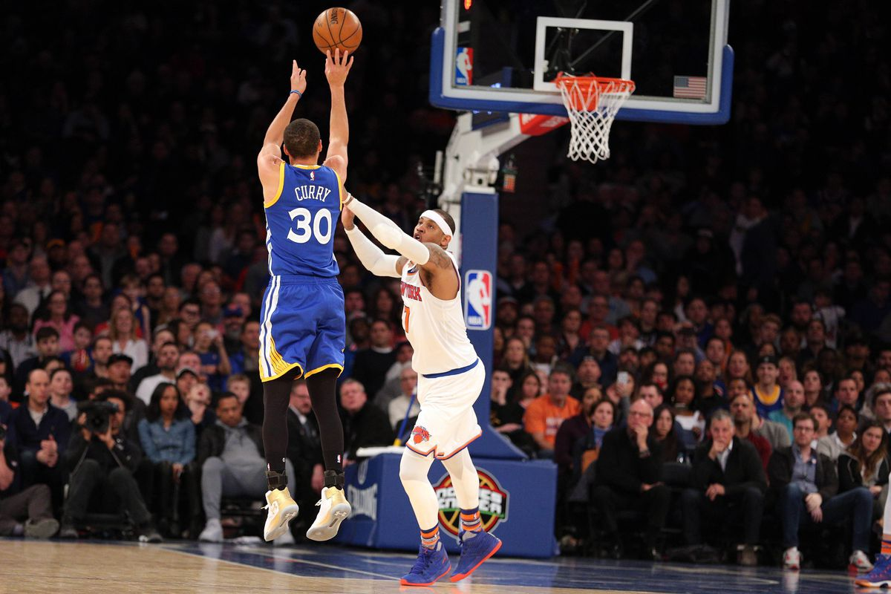
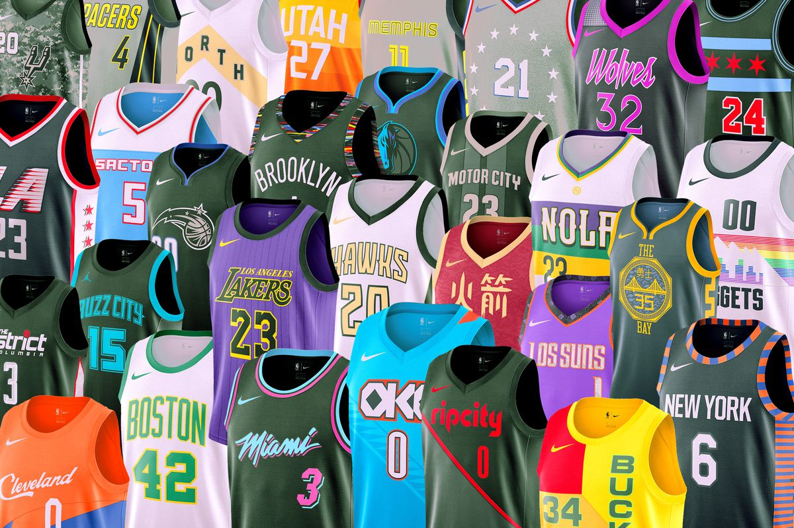

Fun Facts
- James Naismith invented basketball in 1891
- Filipinos enjoy watching and playing basketball
- LeBron James is already 36
- The 3-point line wasn't implemented until 1986
- All NBA jerseys are designed by Nike
He invented a basketball by shooting a soccer ball to a peach basket.
The Philippines comes in 2nd in popularity for the sport. Unfortunately, there is yet to be a full-blooded Filipino in the NBA. However, if Filipinos were gifted with height, they would potentially dominate the NBA.
The king is in that age group of retirees. His career is filled with a mountain of accomplishments, yet he wishes for one thing. That is to play with his son Bronny in an NBA game. By that time, LeBron will already be 40 years old!
This fact may unbelievable to the younger generation since they are growing up with players like Stephen Curry shooting lights out from deep.
NBA jerseys were manufactured by Adidas before the 2017-18 season, but now it is Nike.
